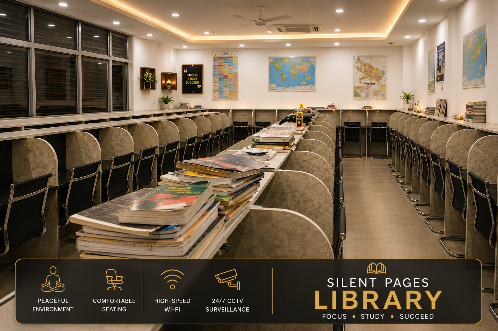
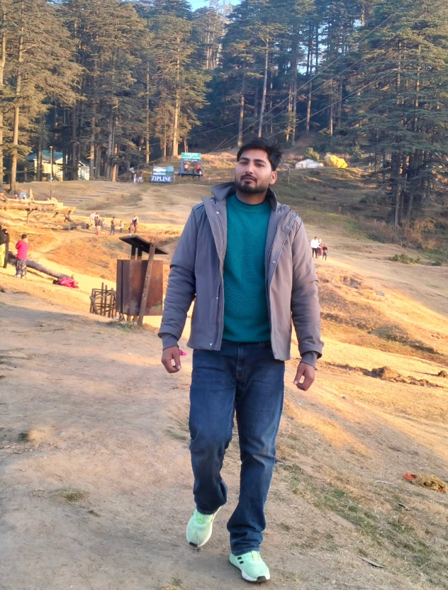

Fully Air-Conditioned Hall
A comfortable, climate-controlled place to stay focused.
A focused place for brighter futures
Silent Pages Library is a thoughtfully designed 24×7 study space for serious learners, competitive-exam preparation, and long, productive study hours.

About Silent Pages
Built for students who value consistency, Silent Pages Library offers a calm setting to read, revise, and prepare with clarity—whether you are here for one focused session or a long study day.
Explore our facilities →Everything considered
A comfortable, climate-controlled place to stay focused.
Thoughtfully arranged desks for productive study hours.
Stay connected for research, classes, and preparation.
A secure space to study with peace of mind.
Clean drinking water available throughout your study day.
Daily newspapers and current magazines for informed learning.
A serious atmosphere designed around concentration.
Dedicated washrooms for girls and boys.
Distraction-free surroundings for sustained preparation.
Inside the library
Explore the real Silent Pages Library study spaces and facilities.
Why choose us
Good preparation is built in the everyday details: a comfortable seat, a calm hall, dependable facilities, and the freedom to study at the hours that suit you.

A personal welcome
Founder & Owner · Silent Pages Library
Silent Pages Library is built with one purpose: to provide students in Itaunja with a dependable, respectful place to show up for their goals every day.
Take a closer look
Watch the library video to get a feel for the study environment before your visit.
Find us
Get in touch
Call Silent Pages Library to enquire or plan your visit.
Instagram: @jitendra_yadav5002 ↗